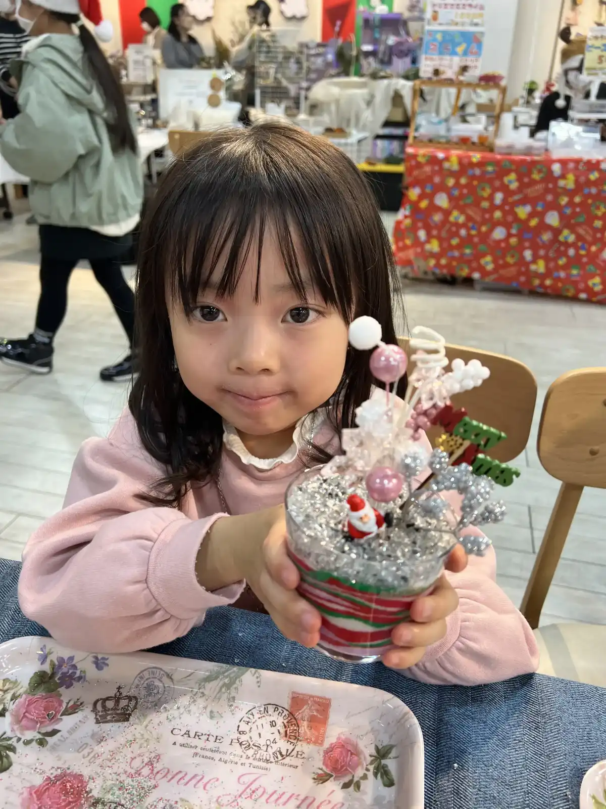

nicolonのサンドアート出張ワークショップは、これまで500回以上開催してきました。企業イベントから福祉施設、保育園、マルシェまで——「本当にうちのイベントでもできる？」という担当者様に向けて、実際の開催レポートとシーン別の導入事例をまとめました。ご検討の参考にしてください。
これまでの開催実績
- 開催実績：500回以上
- 対応シーン：企業イベント／住宅展示場／商業施設／福祉・介護施設／保育園・幼稚園／学校・PTA／子ども会・学童／マルシェ
- 対象年齢：3歳〜高齢者まで
- 対応エリア：福岡・博多を拠点に全国47都道府県（遠方はオンラインも）
- 料金：1名2,000円〜・準備／片付けは講師が担当
実際の開催レポート
写真付きで当日の様子を公開しています。会場の雰囲気や参加者の表情をご覧ください。

企業様の社内イベント開催レポート
社員の皆さんがクリップサンド作りに夢中に。写真たっぷりで当日の様子をご紹介しています。

想家工房株式会社様 住宅展示場イベント
ご来場のファミリーに世界に一つの作品をお持ち帰りいただきました。集客コンテンツとして大盛況。

ショッピングモールでのワークショップ開催レポート
親子連れで賑わう催事に。滞在時間を延ばす体験ブースとして好評でした。

レインボーマルシェ様 マルシェイベント
マルシェの出店ブースが大人気に。老若男女が足を止める体験型ブースの実例です。
シーン別の活用事例
業種・シーンごとの活用ポイントを、それぞれの詳しい記事でご紹介しています。
企業イベント・社内イベント・研修
社内レク・周年記念・顧客感謝祭・福利厚生に。準備不要で担当者様の負担なく、参加者同士の交流も自然に生まれます。
住宅展示場・商業施設の集客
ファミリー層の来場促進、滞在時間の延長に効果的。お子様が体験している間に商談・見学の時間を確保できます。
介護施設・高齢者向けレクリエーション
座ったまま参加でき、指先を使う作業がリハビリにも。認知症の方にもご好評いただいています。
保育園・幼稚園・学校・子ども会
先生の負担ゼロで、園児から保護者まで楽しめます。卒園記念品づくりや行事のコンテンツに。
よくあるご質問
サンドアートの開催実績はどのくらいありますか？
これまで500回以上のワークショップを開催してきました。企業・住宅展示場・商業施設・福祉施設・保育園・学校・マルシェなど、幅広いシーンでご利用いただいています。
どんな業種・シーンで導入されていますか？
ハウスメーカー・不動産の集客、商業施設の催事、企業の社内イベントや福利厚生、介護施設のレク、保育園・幼稚園の行事、子ども会・学童、マルシェ出店など多岐にわたります。3歳から高齢者まで楽しめるのが強みです。
実際の開催の様子を見ることはできますか？
はい、上記の開催レポートで写真付きの様子をご覧いただけます。ご希望があれば、ご検討中のシーンに近い事例を個別にご案内します。
実績豊富なnicolonにおまかせください
24時間以内に返信いたします。500回以上の経験をもとに、貴社・貴施設のイベントに最適なプランをご提案します。まずはお気軽にご相談ください。

原野 玲未REMI HARANO
日本サンドアート協会 認定講師 / Webデザイナー
福岡県在住、5児の母。企業から福祉施設まで、年間100件以上の出張ワークショップを開催しています。
「誰でも簡単に、美しい作品が作れる」をモットーに、参加者全員が笑顔になれる時間を心がけています。